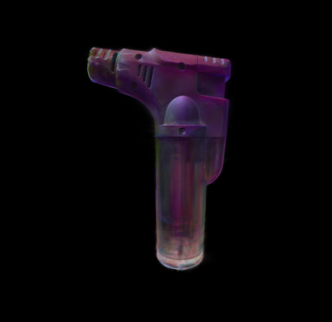

After finishing jank-os, I had to immediately switch gears and start training for the 2026 ICPC NAC, and after that was done I was roped into problemsetting for the A&M Spring programming contest. To get back into doing projects, I decided to do a small one and just write a rendering pipeline for 3D gaussian splats.
3D Gaussian Splatting or 3DGS is a member of a family of techniques to create a 3D representation of a scene given a set of images and their corresponding camera poses in 3D space.
But first, before 3DGS there was a technique called Neural Radiance Fields (NeRF). NeRF's idea was to reconstruct the scene by training a 3D volumetric function such that the difference between viewing the volume and the original camera pose image is minimized. As the name suggests, the 3D volumetric function was approximated by a neural network, and rendering was achieved by doing fixed interval samples of the volumetric function along each camera ray.
By having the color and opacity of the volumetric function also depend on the viewing angle, NeRFs could replicate view dependent lighting features such as specular reflections, not to mention getting global illumination for free. The issue with NeRF is that it was extremely slow, both during training and rendering the final result. The original implementation took 1-2 days to train the scene, and took on the order of 10s of seconds to render a single frame.
Along comes 3DGS, and its performance is far better than NeRF. Like NeRF, 3DGS tries to approximate the 3D volume of the scene, however instead of using a neural volumetric function 3DGS uses millions of 'gaussian splats' to approximate the volume. Where NeRF would take days to train, 3DGS takes 30-45 minutes and even can render in realtime (~144 fps) at 1080p.
A 'gaussian splat' is an arbitrarily scaled, oriented, and translated 3D normal distribution. During rendering, all splats are projected onto the screen as a 2D normal distribution, and the color of each splat is determined using spherical harmonics based on the viewing direction. Finally, the splats are composited in order of ascending depth using alpha blending. This allows 3DGS scenes to be rendered efficiently using operations similar to traditional rasterization while also being able to capture view dependent effects.
First, lets make a simple renderer in which every pixel will iterate over every gaussian in the scene to figure out their own color. We need to work out some math first though...
A 3D gaussian can be represented by a 3D covariance matrix, $\Sigma$, and a center point $\mu$. Given the view matrix $W$, we can project the covariance matrix into 2D by computing $$\Sigma_{\text{2D}} = J W \Sigma W^{T} J^{T}$$ where $J$ is the jacobian matrix of the perspective transform at $\mu' = W \mu$. For a perspective projection matrix, $J$ can be computed as
$$ \begin{bmatrix} \frac{f_x}{\mu'_z} & 0 & \frac{f_x \mu'_x}{{\mu'_z}^2} \\ 0 & \frac{f_y}{\mu'_z} & \frac{f_y \mu'_y}{{\mu'_z}^2} \end{bmatrix} $$where $f_x, f_y$ are the focal lengths of the perspective transform: $$ f_y = \frac{\text{screenHeight}}{2 \tan(\text{verticalFOV} / 2)}, \quad f_x = \frac{f_y \cdot \text{screenWidth}}{\text{screenHeight}} $$
It's probably more accurate to say that we're creating a linear approximation of the 3D covariance in 2D, since perspective projection is inherently non-linear due to the perspective divide. The gaussians are projected this way to keep them differentiable for training purposes.
Note that you aren't usually provided the 3D covariance directly. Instead you are given a scale matrix $S$ and a rotation matrix $R$. $S$ just describes a gaussian which is scaled along each of the xyz axes, and $R$ describes how to rotate the gaussian given by $S$ to get the actual 3D gaussian. To get $\Sigma$ you can just compute $$\Sigma = R S S^T R^T$$
Spherical Harmonics is kind of the spherical analogue to the Fourier transform. With the Fourier transform, we can approximate any periodic function on a circle with a sum of sines and cosines of varying amplitudes, phases, and periods. Spherical Harmonics is similar, but instead we're approximating functions defined on the surface of a sphere, and we now have a whole family of basis functions, instead of just sine and cosine.
In the case of 3DGS, they use spherical harmonics to encode each R, G, and B channels as a function of the viewing direction. If you're interested, here is a table of real spherical harmonics up to degree 4.
We'll have to first load the gaussians from somewhere, and that somewhere is a PLY file. A PLY file consists of a plaintext header and a payload, whose format depends on the information inside of the header. Information in the header is newline separated and can be of various different types:
ply : Always the first line of the header.format <fmt> <version> : Tells you how the payload is formatted. By convention is usually the second line of the header, but it's not guaranteed to be.element <name> <count> : Tells you there is <count> of this element in the payload.property <type> <name> : Tells you this property exists for the most recent element in the header.comment <plaintext> : Human readable plaintext.end_header : Always the last line of the header.Then within the payload, all elements will appear in the order and amount specified by the header. For 3D splat files, each gaussian will have the following properties:
x, y, and z give you $\mu$.opacity gives you the pre-sigmoid base opacity of the gaussian.scale_0, scale_1, and scale_2 give you the natural log of the entries on the main diagonal of $S$.rot_0, rot_1, rot_2, and rot_3 give you $(s, i, j, k)$ representing a rotation quaternion that can be turned into $R$.f_dc_0, f_dc_1, and f_dc_2 give you the degree-0 SH coefficients for the R, G, and B channels respectively.f_rest_0 through f_rest_44 give you the degree-1 to degree-3 SH coefficients.
The first 15 are for R, the next 15 are for G, and the last 15 are for B.
Within a single channel, the coefficients are arranged in ascending degree, then tiebroken by ascending order.
Note that these higher order coefficients are sometimes omitted for simple scenes.
After getting all these splats loaded, we'll want to send them to the GPU for rendering. First we'll sort them on the CPU in ascending order of depth to the camera. Then, we'll pack them into a SSBO with each gaussian taking 240 bytes:
struct Gaussian {
vec3 center;
float pad0;
vec4 orient; //quaternion
vec3 scale;
float alpha;
// 1 degree 0 coeff
// 3 degree 1 coeff
// 5 degree 2 coeff
// 7 degree 3 coeff
float r_coeff[16];
float g_coeff[16];
float b_coeff[16];
};
layout (binding = 0) readonly buffer gaussianBuffer {
Gaussian gaussianData[];
};
Finally we just have to iterate through the gaussians, project each 3D gaussian into 2D, then sample the opacity and color and do alpha compositing.
void main() {
//calc projection focal length
float f_y = float(screenHeight) / (2.0 * tan(verticalFOV / 2.0));
float f_x = f_y * screenWidth / screenHeight;
vec3 color = vec3(0);
float throughput = 1.0;
for(int i = 0; i < nrGaussians; i++) {
Gaussian g = gaussianData[i];
vec3 center = g.center;
vec3 view_dir = normalize(cameraPos - center);
//transform gaussian center into camera space
center = vec3(vw_matrix * vec4(center, 1.0));
//project gaussian center onto screen
vec4 pr_center = pr_matrix * vec4(center, 1.0);
vec2 center_uv = (pr_center.xy / pr_center.w + 1.0) / 2.0;
center_uv.x *= screenWidth;
center_uv.y *= screenHeight;
//project gaussian covariance onto screen
mat3 R = buildMatrixFromQuaternion(g.orient); // covariance rotation
mat3 S = mat3( // covariance scale
g.scale.x, 0, 0,
0, g.scale.y, 0,
0, 0, g.scale.z
);
mat3 Sigma_3D = R * S * transpose(S) * transpose(R); // 3D covariance (world space)
mat3 W = mat3(vw_matrix); // view matrix (no translation)
mat3x2 J = mat3x2( // projection jacobian
f_x / center.z, 0,
0, f_y / center.z,
-f_x * center.x / (center.z * center.z), -f_y * center.y / (center.z * center.z)
);
mat2 Sigma_2D = J * (W * Sigma_3D * transpose(W)) * transpose(J); // 2D covariance (screen pixel space)
//sample gaussian color
vec3 gaussian_color = vec3(
sampleSH(g.r_coeff, view_dir),
sampleSH(g.g_coeff, view_dir),
sampleSH(g.b_coeff, view_dir)
);
//sample gaussian opacity
float opacity = sample2DGaussianOpacity(Sigma_2D, gl_FragCoord.xy - center_uv) * g.alpha;
//gaussian contributes color back to camera
color += gaussian_color * opacity * throughput;
throughput *= 1.0 - opacity;
}
lColor.rgba = vec4(color, 1.0);
}
To sample the opacity at the current pixel, we just want to compute the un-normalized probability density of the current pixel's deviation from the projected center. Recall that the PDF of a 1D gaussian (minus normalization factors) is given by
$$\text{f}(x) = \exp \left( -\frac{(x - \mu)^2}{2 \sigma^2} \right)$$If we have multiple independent variables, then the PDF is just the product of all the variables PDFs:
$$ \text{f}(\textbf{x}) = \prod_{i = 1}^{N} \exp \left( -\frac{(\textbf{x}_i - \mu_i)^2}{2 \sigma_i^2} \right) = \exp \left(-\frac{1}{2} \sum_{i = 1}^{N} \frac{(\textbf{x}_i - \mu_i)^2}{\sigma_i^2} \right) $$A covariance matrix $\Sigma$ is symmetric, which means it can be orthogonally diagonalized. So we have
$$\Sigma = Q S Q^{T}$$Where $Q$ is an orthogonal matrix of eigenvectors of $\Sigma$ and $S$ is a diagonal matrix with the corresponding eigenvalues on the diagonal. Let $S_i$ be the $i$th diagonal element of $S$. If we have a collection of variables that are not independent and we want to query the PDF at some $\textbf{x}$, we can transform them into a space where they are independent by transforming the deviation from $\mu$ by $Q^{-1} = Q^{T}$, and just treat $S$ as the new 'covariance matrix' to compute the PDF:
$$ \text{f}(\textbf{x}) = \exp \left(-\frac{1}{2} \sum_{i = 1}^{N} \frac{ \left(Q^T (\textbf{x} - \mu) \right)_i^2}{S_i} \right) $$Next observe that $S^{-1}$ is also diagonal, and it just has the inverse variances written on the diagonal. So we can rewrite this entire summation as
$$ \text{f}(\textbf{x}) = \exp \left(-\frac{1}{2} \left(Q^T (\textbf{x} - \mu) \right)^T S^{-1} \left(Q^T (\textbf{x} - \mu) \right) \right) $$Finally, using the fact that $(A \textbf{x})^T = \textbf{x}^T A^T$ and observing that $\Sigma^{-1} = Q S^{-1} Q^T$ we get
$$ \text{f}(\textbf{x}) = \exp \left(-\frac{1}{2} (\textbf{x} - \mu)^T Q S^{-1} Q^T (\textbf{x} - \mu) \right) = \exp \left(-\frac{1}{2} (\textbf{x} - \mu)^T \Sigma^{-1} (\textbf{x} - \mu) \right) $$Putting this into code we get
float sample2DGaussianOpacity(mat2 covariance, vec2 v) {
float ret = dot(v, inverse(covariance) * v);
return exp((-1.0 / 2.0) * ret);
}
Finally to compute the color, we can just evaluate the SH with the given coefficients and view direction. I stole some code from here to do this.
const float SH_C0 = 0.28209479177387814;
const float SH_C1 = 0.4886025119029199;
const float SH_C2_0 = 1.0925484305920792;
const float SH_C2_1 = -1.0925484305920792;
const float SH_C2_2 = 0.31539156525252005;
const float SH_C2_3 = -1.0925484305920792;
const float SH_C2_4 = 0.5462742152960396;
const float SH_C3_0 = -0.5900435899266435;
const float SH_C3_1 = 2.890611442640554;
const float SH_C3_2 = -0.4570457994644658;
const float SH_C3_3 = 0.3731763325901154;
const float SH_C3_4 = -0.4570457994644658;
const float SH_C3_5 = 1.445305721320277;
const float SH_C3_6 = -0.5900435899266435;
float sampleSH(float coeff[16], vec3 dir) {
float x = dir.x;
float y = dir.y;
float z = dir.z;
float xx = x * x;
float yy = y * y;
float zz = z * z;
float xy = x * y;
float yz = y * z;
float xz = x * z;
float result = 0.0;
// degree 0
result += SH_C0 * coeff[0];
// degree 1
result += -SH_C1 * y * coeff[1];
result += SH_C1 * z * coeff[2];
result += -SH_C1 * x * coeff[3];
// degree 2
result += SH_C2_0 * xy * coeff[4];
result += SH_C2_1 * yz * coeff[5];
result += SH_C2_2 * (2.0 * zz - xx - yy) * coeff[6];
result += SH_C2_3 * xz * coeff[7];
result += SH_C2_4 * (xx - yy) * coeff[8];
// degree 3
result += SH_C3_0 * y * (3.0 * xx - yy) * coeff[9];
result += SH_C3_1 * xy * z * coeff[10];
result += SH_C3_2 * y * (4.0 * zz - xx - yy) * coeff[11];
result += SH_C3_3 * z * (2.0 * zz - 3.0 * xx - 3.0 * yy) * coeff[12];
result += SH_C3_4 * x * (4.0 * zz - xx - yy) * coeff[13];
result += SH_C3_5 * z * (xx - yy) * coeff[14];
result += SH_C3_6 * x * (xx - 3.0 * yy) * coeff[15];
return result;
}
The naive renderer works, but is extremely slow. One bottleneck is doing gaussian sorting on the CPU and transferring to the GPU. Since CPU to GPU memory transfers are very slow, writing a GPU sort would make it much faster and we can take advantage of the GPU to make it even faster.
Another thing is that the majority of gaussians actually do not occupy much space on the screen, which results in each pixel iterating over many gaussians that do not meaningfully contribute to its color. To make sure that each pixel only iterates over gaussians that are likely to contribute to its color, we can partition the screen into 16x16 pixel tiles, and then for each gaussian we'll figure out which tiles it contributes to.
So the pipeline looks something like this:
In order to parallelize writing to the gaussian-tile pair buffer, each gaussian first must know the region in which it's allowed to write. If the $i$th gaussian has $A_i$ pairs to write and we want the buffer to be tightly packed, then the $i$th gaussian should write its pairs in the interval $$[A_0 + \cdots + A_{i - 1}, A_0 + \cdots + A_{i - 1} + A_i)$$ So the problem boils down to finding a way to generate the exclusive prefix sum of $A$ while efficiently utilizing the GPU. Luckily some guy named Blelloch figured out how to do this, and his algorithm is covered in a chapter of GPU Gems here. Although the prefix sum seems like it's inherently a sequential calculation, he manages to compute all prefix sums in place using only $O(n)$ additions and $O(\log(n))$ time assuming you have $O(n)$ processors available.
The next problem is sorting the gaussian-tile pair buffer. In a previous project I had implemented bitonic merge sort, however that algorithm isn't really well suited to being run on the GPU due to requiring processors to compare and swap elements within global memory. Instead, I decided to go with radix sort, as that's the algorithm that people online say is the one best suited for the GPU, and it checks out as modern implementations can sort billions of keys per second.
For radix sort on the CPU, we'll first choose some $K$, for example $K = 4$. Then in each iteration of the sort, we'll sort all the elements in ascending order by the first least significant group of $K$ bits. In the next iteration of the sort, we'll once again sort all the elements in ascending order, but by the second least significant group of $K$ bits. We keep repeating this until we've exhausted all the bits, so for 32-bit integers we would repeat this 8 times for $K = 4$.
Performing a sort involves partitioning all the elements into the $2^K$ buckets, and then writing them back into the array in sorted order, exactly like a counting sort. Observe that as long as each iteration's sort is stable (relative positions of equal elements don't change) the whole array will be sorted by the end.
So then how can one use the GPU to speed up radix sort? The intuition here is that if for all elements we can magically figure out what index it's supposed to be at at the end of this iteration, then performing the sort is just a matter of doing one memory write per iteration per element.
To actually compute this index, observe that if an element's current bucket is $b$,
then the new index is just the total amount of elements with bucket less than $b$,
plus the amount of elements before the current element with bucket equal to $b$.
So if for each element we compute an array like H[i][b] = number of elements before i that are in bucket b
along with totals for each bucket, then we have our next iteration index.
Actually, we can compute such an array pretty easily.
Note that H is just the exclusive prefix sum of an array like h[i][b] = 1 if element i is in bucket b, otherwise 0.
And we can compute an exclusive prefix sum quickly using the aforementioned Blelloch scan algorithm.
Writing the better renderer was just a matter of writing all the individual pipeline phases and then gluing them all together. For my renderer, the tiles that the gaussian contributes to is an AABB determined by the variance along the x and y screen directions.
float tau = 9;
vec2 screen_dim = vec2(
sqrt(tau * Sigma_2D[0][0]),
sqrt(tau * Sigma_2D[1][1])
);
float min_x = center_uv.x - screen_dim.x;
float min_y = center_uv.y - screen_dim.y;
float max_x = center_uv.x + screen_dim.x;
float max_y = center_uv.y + screen_dim.y;
int tile_min_x = int(floor(min_x / tileSize));
int tile_min_y = int(floor(min_y / tileSize));
int tile_max_x = int(ceil(max_x / tileSize));
int tile_max_y = int(ceil(max_y / tileSize));
//clamp AABB to screen
int tile_screen_width = (screenWidth + tileSize - 1) / tileSize;
int tile_screen_height = (screenHeight + tileSize - 1) / tileSize;
tile_min_x = max(0, min(tile_screen_width, tile_min_x));
tile_min_y = max(0, min(tile_screen_height, tile_min_y));
tile_max_x = max(0, min(tile_screen_width, tile_max_x));
tile_max_y = max(0, min(tile_screen_height, tile_max_y));
The amount of tiles in the AABB is written to the gaussianStartData buffer,
phase 2 then proceeds to take the exclusive prefix sum of the buffer,
and finally phase 3 repeats the AABB calculation and writes all the pairs into the tileBuffer.
The tileBuffer is just an array of Tile structs, which are just gaussian-tile pairs that
stores some extra metadata relevant to sorting.
struct Tile {
int tile_id; // should be in range [0, 65536)
int gaussian_depth; // quantized depth, assume within range [0, 65536) as well
int gaussian_id;
int pad0;
};
Since I'm rendering at a maximum resolution of 1920 by 1080 pixels, the maximum amount of screen tiles is 8160. I also decided to quantize the gaussian depth to range $[0, 2^{16})$ so that we can have a clean 8 iterations at $K = 4$.
Then to compute for each tile its starting index within the tileBuffer, I just do a binary search for each tile
since the pairs are sorted in ascending order by tile_id.
There's probably a faster way to do this, but since the number of screen tiles is so small, this is good enough.
//binary search for first tile with id >= current tile
int low = 0, high = total_tiles - 1;
int ans = total_tiles;
while(low <= high) {
int mid = low + (high - low) / 2;
if(tileData[mid].tile_id >= tile_id) {
ans = mid;
high = mid - 1;
}
else {
low = mid + 1;
}
}
tileStartData[tile_id] = ans;
Finally, phase 6 just rasterizes all the pixels by iterating through all the gaussians in its tile in ascending order by depth.

The better renderer works, but currently the performance is rather underwhelming. On my laptop, I get around 10 fps while rendering a scene with ~200k gaussians, which is a far cry from the original paper's reported 144 fps with millions of gaussians. Perhaps they had better hardware than me, but I have a feeling that there is much that I can do to bring my performance closer to theirs.
There are a few issues with our current iteration of radix sort. The first major issue is that it's slow: in the scene with 200k gaussians, sorting was taking up around 95% of the total frame time. In total there were ~700k pairs and it was taking ~80 ms to sort them all. The second issue is that it's taking up way too much memory to sort. For each element, we need to build an array of $2^K = 16$ integers, so that's 64 bytes per array element. Memory on the GPU is rather limited, and I would like to use as much of it as possible for storing gaussians.
We can resolve both issues by splitting the array into 1024-element blocks. The idea is that we'll use shared memory to compute the histogram for each block, then we'll do another pass over all the block histograms to combine them all. This way, the amount of reading and writing to global memory is greatly reduced since we're doing most of the work in local memory, and since global memory on the GPU is very slow, this will probably speed up the sort as well.
#version 430 core
layout (local_size_x = 32, local_size_y = 1, local_size_z = 1) in;
const int ELEMENTS_PER_THREAD = 32;
const int THREADS_PER_BLOCK = int(gl_WorkGroupSize.x);
const int K = 4;
const int B = THREADS_PER_BLOCK * ELEMENTS_PER_THREAD;
const int BUCKET_MASK = (1 << K) - 1;
uniform int nrGaussians;
uniform int sortIteration;
uniform int sortPhase;
struct Tile {
int tile_id; // should be in range [0, 65536)
int gaussian_depth; // quantized depth, assume within range [0, 65536) as well
int gaussian_id;
int pad0;
};
layout (binding = 1) readonly buffer gaussianStartBuffer {
int gaussianStartData[];
};
layout (binding = 2) readonly buffer tileBuffer1 {
Tile tileData1[];
};
layout (binding = 3) buffer tileBuffer2 {
Tile tileData2[];
};
layout (binding = 4) buffer blockHistogramBuffer {
int blockHistogramData[][1 << K];
};
shared Tile localTileData[B];
shared int localHistogramData[THREADS_PER_BLOCK][1 << K];
void main() {
int total_tiles = gaussianStartData[nrGaussians];
int total_blocks = (total_tiles + B - 1) / B;
int global_id = int(gl_GlobalInvocationID.x);
int local_id = int(gl_LocalInvocationID.x);
int block_id = int(gl_WorkGroupID.x);
int L = block_id * B;
int R = min(total_tiles, L + B);
if(L >= R) {
//nothing to sort in block
return;
}
//load tiles from global memory
for(int i = 0; i < ELEMENTS_PER_THREAD; i++) {
if(L + local_id * ELEMENTS_PER_THREAD + i < R) {
localTileData[local_id * ELEMENTS_PER_THREAD + i] = tileData1[L + local_id * ELEMENTS_PER_THREAD + i];
localTileData[local_id * ELEMENTS_PER_THREAD + i].pad0 = sortIteration + 1;
}
}
barrier();
if(sortPhase == 0) {
//compute per-thread histograms
for(int i = 0; i < (1 << K); i++) {
localHistogramData[local_id][i] = 0;
}
for(int i = 0; i < ELEMENTS_PER_THREAD; i++) {
if(L + local_id * ELEMENTS_PER_THREAD + i < R) {
int bucket;
if(sortIteration < 4) {
//compare gaussian depth
bucket = (localTileData[local_id * ELEMENTS_PER_THREAD + i].gaussian_depth >> (sortIteration * K)) & BUCKET_MASK;
}
else {
//compare tile id
bucket = (localTileData[local_id * ELEMENTS_PER_THREAD + i].tile_id >> ((sortIteration - 4) * K)) & BUCKET_MASK;
}
localHistogramData[local_id][bucket] ++;
}
}
barrier();
//merge into per-block histogram and write to global memory
if(local_id < (1 << K)) {
int sum = 0;
for(int i = 0; i < THREADS_PER_BLOCK; i++) {
sum += localHistogramData[i][local_id];
}
blockHistogramData[block_id][local_id] = sum;
}
}
else if(sortPhase == 1) {
//take prefix sum of per-block histograms
if(global_id < (1 << K)) {
int sum = 0;
for(int i = 0; i < total_blocks; i++) {
int cur = blockHistogramData[i][global_id];
blockHistogramData[i][global_id] = sum;
sum += cur;
}
blockHistogramData[total_blocks][global_id] = sum;
}
}
else if(sortPhase == 2) {
//compute per-thread histograms
for(int i = 0; i < (1 << K); i++) {
localHistogramData[local_id][i] = 0;
}
for(int i = 0; i < ELEMENTS_PER_THREAD; i++) {
if(L + local_id * ELEMENTS_PER_THREAD + i < R) {
int bucket;
if(sortIteration < 4) {
//compare gaussian depth
bucket = (localTileData[local_id * ELEMENTS_PER_THREAD + i].gaussian_depth >> (sortIteration * K)) & BUCKET_MASK;
}
else {
//compare tile id
bucket = (localTileData[local_id * ELEMENTS_PER_THREAD + i].tile_id >> ((sortIteration - 4) * K)) & BUCKET_MASK;
}
localHistogramData[local_id][bucket] ++;
}
}
barrier();
//take prefix sum of per-thread histograms
if(local_id < (1 << K)) {
int sum = 0;
for(int i = 0; i < THREADS_PER_BLOCK; i++) {
int cur = localHistogramData[i][local_id];
localHistogramData[i][local_id] = sum;
sum += cur;
}
}
barrier();
//scatter to global tmp buffer
// - should probably compute the global_histogram_prefix as a shared structure somewhere
int global_histogram_prefix[(1 << K)];
global_histogram_prefix[0] = 0;
for(int i = 1; i < (1 << K); i++) {
global_histogram_prefix[i] = global_histogram_prefix[i - 1] + blockHistogramData[total_blocks][i - 1];
}
int thread_histogram[(1 << K)];
for(int i = 0; i < (1 << K); i++) {
thread_histogram[i] = 0;
}
for(int i = 0; i < ELEMENTS_PER_THREAD; i++) {
if(L + local_id * ELEMENTS_PER_THREAD + i < R) {
//calc bucket
int bucket;
if(sortIteration < 4) {
//compare gaussian depth
bucket = (localTileData[local_id * ELEMENTS_PER_THREAD + i].gaussian_depth >> (sortIteration * K)) & BUCKET_MASK;
}
else {
//compare tile id
bucket = (localTileData[local_id * ELEMENTS_PER_THREAD + i].tile_id >> ((sortIteration - 4) * K)) & BUCKET_MASK;
}
//where to move this tile to
int global_ind =
global_histogram_prefix[bucket] +
blockHistogramData[block_id][bucket] +
localHistogramData[local_id][bucket] +
thread_histogram[bucket]
;
tileData2[global_ind] = localTileData[local_id * ELEMENTS_PER_THREAD + i];
//update thread local histogram
thread_histogram[bucket] ++;
}
}
}
}
With our new radix sort, performance has improved considerably! Now, it only takes ~20 ms to sort all ~700k elements. However, we can still do better. I made the following optimizations (with approximate time to sort ~700k elements in parentheses):
sortPhase 1. (~18 ms)tile_id and gaussian_depth into one uint, so sizeof(Tile) is now 8 bytes (~10 ms)globalHistogramPrefix once per workgroup in shared memory in sortPhase 2. (~8 ms)thread_histogram_offset alongside per-thread histograms instead of seperately. (~7.5 ms)sortPhase 0. (~6 ms)sortPhase 2 by storing them while building the thread histogram (~5.8 ms)ELEMENTS_PER_THREAD section during sortPhase 2,
forego loading tiles into shared memory and just load it into thread local memory. (~5.6 ms)
ELEMENTS_PER_THREAD to 8 and replace sortPhase 1 with an actual parallel prefix scan (~2.25 ms)
#version 430 core
layout (local_size_x = 32, local_size_y = 1, local_size_z = 1) in;
const int ELEMENTS_PER_THREAD = 8;
const int THREADS_PER_BLOCK = int(gl_WorkGroupSize.x);
const int K = 4;
const int B = THREADS_PER_BLOCK * ELEMENTS_PER_THREAD;
const int BUCKET_MASK = (1 << K) - 1;
const int PREFIX_SCAN_BLOCK_SIZE = 64;
uniform int nrGaussians;
uniform int nrTiles;
uniform int sortIteration;
uniform int sortPhase;
uniform int sweepPhase;
struct Tile {
// tile_id should be in range [0, 65536)
// gaussian_depth should be quantized in range [0, 65536)
uint sort_key; // (tile_id << 16) | (gaussian_depth << 0)
int gaussian_id;
};
layout (binding = 2) readonly restrict buffer tileBuffer1 {
Tile tileData1[];
};
layout (binding = 3) writeonly restrict buffer tileBuffer2 {
Tile tileData2[];
};
layout (binding = 4) restrict buffer blockHistogramBuffer {
int blockHistogramData[][1 << K];
};
layout (binding = 5) restrict buffer blockHistogramPrefixBuffer {
int blockHistogramPrefixData[][1 << K];
};
shared int localHistogramData[64][1 << K];
shared int globalHistogramPrefix[1 << K];
void main() {
int total_tiles = nrTiles;
int total_blocks = (total_tiles + B - 1) / B;
int global_id = int(gl_GlobalInvocationID.x);
int local_id = int(gl_LocalInvocationID.x);
int block_id = int(gl_WorkGroupID.x);
int L = block_id * B;
int R = min(total_tiles, L + B);
if(sortPhase == 0) {
//compute per-thread histograms
for(int i = 0; i < (1 << K); i++) {
localHistogramData[local_id][i] = 0;
}
for(int i = 0; i < ELEMENTS_PER_THREAD; i++) {
if(L + local_id * ELEMENTS_PER_THREAD + i < R) {
uint bucket = (tileData1[L + local_id * ELEMENTS_PER_THREAD + i].sort_key >> (sortIteration * K)) & BUCKET_MASK;
localHistogramData[local_id][bucket] ++;
}
}
barrier();
//merge into per-block histogram and write to global memory
if(local_id < (1 << K)) {
int sum = 0;
for(int i = 0; i < THREADS_PER_BLOCK; i++) {
sum += localHistogramData[i][local_id];
}
blockHistogramData[block_id][local_id] = sum;
}
}
else if(sortPhase == 1) {
//for this phase, we'll have blocks of size 64
//every thread is responsible for managing 2 elements.
if(sweepPhase == 0) { //compute per-block prefix sums
if(false) { //linear scan
if(local_id < (1 << K)) {
int sum = 0;
for(int i = 0; i < PREFIX_SCAN_BLOCK_SIZE; i++) {
int tmp = blockHistogramData[block_id * PREFIX_SCAN_BLOCK_SIZE + i][local_id];
blockHistogramData[block_id * PREFIX_SCAN_BLOCK_SIZE + i][local_id] = sum;
sum += tmp;
}
blockHistogramPrefixData[block_id][local_id] = sum;
}
}
else { //upsweep/downsweep
//load into local memory
localHistogramData[local_id * 2 + 0] = blockHistogramData[block_id * PREFIX_SCAN_BLOCK_SIZE + local_id * 2 + 0];
localHistogramData[local_id * 2 + 1] = blockHistogramData[block_id * PREFIX_SCAN_BLOCK_SIZE + local_id * 2 + 1];
barrier();
//upsweep
for(int ival = 1; ival < PREFIX_SCAN_BLOCK_SIZE; ival <<= 1) {
if((local_id & (ival - 1)) == (ival - 1)) {
for(int i = 0; i < (1 << K); i++) {
localHistogramData[local_id * 2 + 1][i] += localHistogramData[local_id * 2 + 1 - ival][i];
}
}
barrier();
}
//downsweep
int sum = 0;
if(local_id < (1 << K)) {
sum = localHistogramData[PREFIX_SCAN_BLOCK_SIZE - 1][local_id];
localHistogramData[PREFIX_SCAN_BLOCK_SIZE - 1][local_id] = 0;
}
barrier();
int tmp[1 << K];
for(int ival = (PREFIX_SCAN_BLOCK_SIZE >> 1); ival >= 1; ival >>= 1) {
if((local_id & (ival - 1)) == (ival - 1)) {
tmp = localHistogramData[local_id * 2 + 1];
for(int i = 0; i < (1 << K); i++) {
localHistogramData[local_id * 2 + 1][i] += localHistogramData[local_id * 2 + 1 - ival][i];
}
localHistogramData[local_id * 2 + 1 - ival] = tmp;
}
barrier();
}
//write back to global memory
blockHistogramData[block_id * PREFIX_SCAN_BLOCK_SIZE + local_id * 2 + 0] = localHistogramData[local_id * 2 + 0];
blockHistogramData[block_id * PREFIX_SCAN_BLOCK_SIZE + local_id * 2 + 1] = localHistogramData[local_id * 2 + 1];
if(local_id < (1 << K)) {
blockHistogramPrefixData[block_id][local_id] = sum;
}
}
}
else if(sweepPhase == 1) { //compute block prefix sums
//just do linear scan over every superblock
int total_superblocks = total_blocks / PREFIX_SCAN_BLOCK_SIZE + 1;
if(local_id < (1 << K) && block_id == 0) {
int sum = 0;
for(int i = 0; i < total_superblocks; i++) {
int tmp = blockHistogramPrefixData[i][local_id];
blockHistogramPrefixData[i][local_id] = sum;
sum += tmp;
}
}
}
else if(sweepPhase == 2) { //add block prefix sums to all elements
for(int i = 0; i < (1 << K); i++) {
blockHistogramData[block_id * PREFIX_SCAN_BLOCK_SIZE + local_id * 2 + 0][i] += blockHistogramPrefixData[block_id][i];
blockHistogramData[block_id * PREFIX_SCAN_BLOCK_SIZE + local_id * 2 + 1][i] += blockHistogramPrefixData[block_id][i];
}
}
}
else if(sortPhase == 2) {
//load tiles from global memory
Tile threadTileData[ELEMENTS_PER_THREAD];
for(int i = 0; i < ELEMENTS_PER_THREAD; i++) {
if(L + local_id * ELEMENTS_PER_THREAD + i < R) {
threadTileData[i] = tileData1[L + local_id * ELEMENTS_PER_THREAD + i];
}
}
//compute per-thread histograms
// - also compute thread local element histogram offsets for when we do the actual scatter
uint thread_histogram_info[ELEMENTS_PER_THREAD]; // (offset << K) | (bucket << 0)
for(int i = 0; i < (1 << K); i++) {
localHistogramData[local_id][i] = 0;
}
for(int i = 0; i < ELEMENTS_PER_THREAD; i++) {
if(L + local_id * ELEMENTS_PER_THREAD + i < R) {
uint bucket = (threadTileData[i].sort_key >> (sortIteration * K)) & BUCKET_MASK;
thread_histogram_info[i] = (uint(localHistogramData[local_id][bucket]) << K) | (bucket << 0);
localHistogramData[local_id][bucket] ++;
}
}
barrier();
//do some prefix sums
// - take prefix sum of per-thread histograms
// - take prefix sum of global bucket totals
if(local_id < (1 << K)) {
int sum = 0;
for(int i = 0; i < THREADS_PER_BLOCK; i++) {
int cur = localHistogramData[i][local_id];
localHistogramData[i][local_id] = sum;
sum += cur;
}
}
else if(local_id == (1 << K)) {
globalHistogramPrefix[0] = 0;
for(int i = 1; i < (1 << K); i++) {
globalHistogramPrefix[i] = globalHistogramPrefix[i - 1] + blockHistogramData[total_blocks][i - 1];
}
}
barrier();
//scatter to global tmp buffer
for(int i = 0; i < ELEMENTS_PER_THREAD; i++) {
if(L + local_id * ELEMENTS_PER_THREAD + i < R) {
//calc bucket
uint bucket = thread_histogram_info[i] & BUCKET_MASK;
//where to move this tile to
int global_ind =
globalHistogramPrefix[bucket] +
blockHistogramData[block_id][bucket] +
localHistogramData[local_id][bucket] +
int(thread_histogram_info[i] >> K)
;
tileData2[global_ind] = threadTileData[i];
}
}
}
}
I was rather surprised that with just some hacky changes we could actually improve the performance by almost 10x. However there was one optimization that I could never get to work: speeding up global memory writes by making them more coherent. The idea is that if we pre-sort all blocks in local memory before writing them to the global buffer, then adjacent elements in local memory are much more likely to be adjacent in the global buffer. So then each thread is much more likely to write to a contiguous block of global memory addresses, reducing cache misses and increasing the speed of global memory writes.
Sadly regardless of what I tried, the cost of doing the local sort always was larger than the benefit from more coherent global memory writes. Perhaps I need to take more advantage of GPU intrinsics when writing the local sort, or maybe my data isn't large enough for this to benefit me.
We can also improve performance by just not doing as much work. Probably the biggest culprit of repeated work in my pipeline is repeating the 2D covariance matrix projection in phases 1, 3, and 6. Just doing the work once in phase 1 and caching it for phases 3 and 6 already saves a ton of work.
Speaking of doing less work, we can also do more of that by inlining our math code.
One easy example is computing color from SH.
Originally, I just called sampleSH three times, one for each channel, but there is a lot of work that can be reused between the three calls.
Specifically, since viewing direction is fixed, the value multiplied by the channel coefficients are the same for each channel, so computing it inline and
reusing those computations makes it much faster.
float SH_coeff[16];
// degree 0
SH_coeff[0] = SH_C0;
// degree 1
SH_coeff[1] = -SH_C1 * y;
SH_coeff[2] = SH_C1 * z;
SH_coeff[3] = -SH_C1 * x;
// degree 2
SH_coeff[4] = SH_C2_0 * xy;
SH_coeff[5] = SH_C2_1 * yz;
SH_coeff[6] = SH_C2_2 * (2.0 * zz - xx - yy);
SH_coeff[7] = SH_C2_3 * xz;
SH_coeff[8] = SH_C2_4 * (xx - yy);
// degree 3
SH_coeff[9] = SH_C3_0 * y * (3.0 * xx - yy);
SH_coeff[10] = SH_C3_1 * xy * z;
SH_coeff[11] = SH_C3_2 * y * (4.0 * zz - xx - yy);
SH_coeff[12] = SH_C3_3 * z * (2.0 * zz - 3.0 * xx - 3.0 * yy);
SH_coeff[13] = SH_C3_4 * x * (4.0 * zz - xx - yy);
SH_coeff[14] = SH_C3_5 * z * (xx - yy);
SH_coeff[15] = SH_C3_6 * x * (xx - 3.0 * yy);
vec3 color = vec3(0);
for(int i = 0; i < 16; i++) {
color.r += SH_coeff[i] * g.r_coeff[i];
color.g += SH_coeff[i] * g.g_coeff[i];
color.b += SH_coeff[i] * g.b_coeff[i];
}
Strangely when I tried to reduce the 2D covariance matrix projection code, it ran slower than just doing the matrix multiplications. Perhaps GLSL just does matrix multiplications extremely efficiently, which would make sense.
mat3 R = buildMatrixFromQuaternion(g.orient);
if(reflectY) {
R[0][1] *= -1;
R[1][1] *= -1;
R[2][1] *= -1;
}
mat3 A = mat3(vw_matrix) * R;
vec3 ax = A[0] * (g.scale.x * renderScale);
vec3 ay = A[1] * (g.scale.y * renderScale);
vec3 az = A[2] * (g.scale.z * renderScale);
float inv_z = 1.0 / center.z;
float inv_z2 = inv_z * inv_z;
float jx_x = f_x * inv_z;
float jy_y = f_y * inv_z;
float jz_x = -f_x * center.x * inv_z2;
float jz_y = -f_y * center.y * inv_z2;
vec2 px = vec2(
ax.x * jx_x + ax.z * jz_x,
ax.y * jy_y + ax.z * jz_y
);
vec2 py = vec2(
ay.x * jx_x + ay.z * jz_x,
ay.y * jy_y + ay.z * jz_y
);
vec2 pz = vec2(
az.x * jx_x + az.z * jz_x,
az.y * jy_y + az.z * jz_y
);
float s00 = px.x * px.x + py.x * py.x + pz.x * pz.x;
float s01 = px.x * px.y + py.x * py.y + pz.x * pz.y;
float s11 = px.y * px.y + py.y * py.y + pz.y * pz.y;
Sigma_2D = mat2(
s00, s01,
s01, s11
);
With all the optimizations in place, the pipeline can render the same scene with ~200k gaussians at 90 fps, and some larger scenes with ~2M gaussians at 20 fps. However I still have some more ideas floating around to optimize the pipeline further. Observe that the SH color of each gaussian doesn't change much within a short period of time, if we assume that the camera moves reasonably slowly. This means that we can probably have a separate thread dedicated to updating the color of all the gaussians running at a much lower framerate, probably 10 fps is sufficient.
Not only the color is temporally coherent, but the depth of all the gaussians as well. Suppose that instead of sorting pairs, we sort the gaussians themselves by camera depth. Then, perhaps we can somehow write to the gaussian-tile pair buffer in sorted order to avoid having to sort the massive pair buffer. Sorting gaussians can also take place at a lower framerate on a separate thread.
There are probably some other tricks that can be done, like completely culling offscreen gaussians from the rendering pipeline, or somehow getting rid of gaussians that are completely covered by other gaussians.